无标题 发表于 2025-03-26 | 更新于 2025-03-30
| 总字数: 5.1k | 阅读时长: 22分钟 | 浏览量: |
文档处理-增删改
文档处理方法
描述
内部插入
append()向每个匹配的元素内部追加内容
appendTo()把所有匹配的元素追加到另一个指定的元素元素集合中
prepend()向每个匹配的元素内部前置内容
prependTo()把所有匹配的元素前置到另一个、指定的元素元素集合中
外部插入
after()在每个匹配的元素之后插入内容
before()在每个匹配的元素之前插入内容
insertAfter()把所有匹配的元素插入到另一个、指定的元素元素集合的后面
insertBefore()把所有匹配的元素插入到另一个、指定的元素元素集合的前面
包裹
wrap()把所有匹配的元素用其他元素的结构化标记包裹起来
unwrap()这个方法将移出元素的父元素
wrapAll()将所有匹配的元素用单个元素包裹起来
wrapInner()将每一个匹配的元素的子内容(包括文本节点)用一个 HTML 结构包裹起来
替换
replaceWith()将所有匹配的元素替换成指定的 HTML 或 DOM 元素
replaceAll()用匹配的元素替换掉所有 selector 匹配到的元素
删除
empty()删除匹配的元素集合中所有的子节点
remove()从 DOM 中删除所有匹配的元素
detach()从 DOM 中删除所有匹配的元素
克隆
clone()克隆匹配的 DOM 元素并且选中这些克隆的副本
append、appendTo
1 2 3 $('<span>appendTo添加的span</span>' ).appendTo ($('#ul1' ));
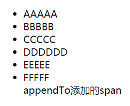
prepend、prependTo
1 2 3 $('<span>prependTo添加的span</span>' ).prependTo ($('#ul1' ));
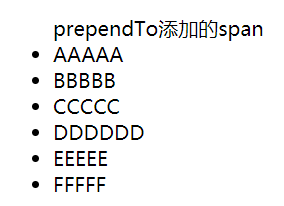
before、insertBefore
1 2 3 $('<span>insertBefore添加的span</span>' ).insertBefore ($('#ul1' ).children ('li[title=hello]' ));
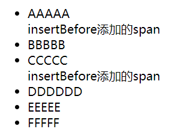
after、insertAfter
1 2 3 $('<span>insertAfter添加的span</span>' ).insertAfter ($('#ul1' ).children ('li[title=hello]' ));
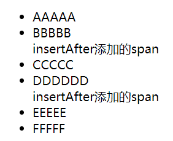
replaceWith、replaceAll
1 2 3 $('<p>replaceWith替换的p</p>' ).replaceAll ($('#ul2' ).children ('li[title=hello]' ));
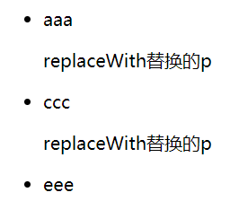
empty、remove、detach
1 2 $('#ul2' ).children ('li' ).empty ();
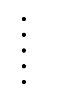
1 2 3 4 $('#ul2' ).children ('li' ).detach ();
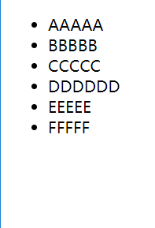
练习：添加删除员工
1 2 3 4 5 6 7 8 9 10 11 12 13 14 15 16 17 18 19 20 21 22 23 24 25 26 27 28 29 30 31 32 33 34 35 36 37 38 39 40 41 42 43 44 45 46 47 48 49 50 51 52 53 54 55 56 57 <table id ="employeeTable" > <tr > <th > Name</th > <th > Email</th > <th > Salary</th > <th > </th > </tr > <tr > <td > Tom</td > <td > tom@tom.com</td > <td > 5000</td > <td > <a href ="deleteEmp?id=001" > Delete</a > </td > </tr > <tr > <td > Jerry</td > <td > jerry@sohu.com</td > <td > 8000</td > <td > <a href ="deleteEmp?id=002" > Delete</a > </td > </tr > <tr > <td > Bob</td > <td > bob@tom.com</td > <td > 10000</td > <td > <a href ="deleteEmp?id=003" > Delete</a > </td > </tr > </table > <div id ="formDiv" > <h4 > 添加新员工</h4 > <table > <tr > <td class ="word" > name:</td > <td class ="inp" > <input type ="text" name ="empName" id ="empName" /> </td > </tr > <tr > <td class ="word" > email:</td > <td class ="inp" > <input type ="text" name ="email" id ="email" /> </td > </tr > <tr > <td class ="word" > salary:</td > <td class ="inp" > <input type ="text" name ="salary" id ="salary" /> </td > </tr > <tr > <td colspan ="2" align ="center" > <button id ="addEmpButton" value ="abc" > Submit </button > </td > </tr > </table > </div >
1 2 3 4 5 6 7 8 9 10 11 12 13 14 15 16 17 18 19 20 21 22 23 24 25 26 27 28 29 30 31 32 33 $('#addEmpButton' ).click (function ( var $empName = $('#empName' ); var $email = $('#email' ); var $salary = $('#salary' ); var empName = $empName.val (); var email = $email.val (); var salary = $salary.val (); $('<tr></tr>' ) .append ('<td>' + empName + '</td>' ) .append ('<td>' + email + '</td>' ) .append ('<td>' + salary + '</td>' ) .append ('<td><a href="deleteEmp?id=' + Date .now () + '">Delete</a></td>' ) .appendTo ($('#employeeTable' ).children ('tbody' )); $empName.val ('' ); $email.val ('' ); $salary.val ('' ); }); $('#employeeTable' ).delegate ('a' , "click" , function ( var $tr = $(this ).parent ().parent (); var name = $tr.children (':first' ).html (); if (confirm ('确定删除' + name + '的相关信息吗？' )) { $tr.remove (); } return false ; });
效果
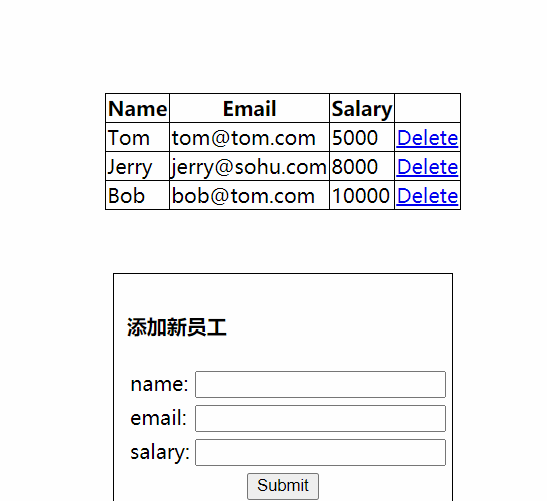
事件处理
事件方法
描述
页面载入
ready()当 DOM 载入就绪可以查询及操纵时绑定一个要执行的函数
事件处理
on()在选择元素上绑定一个或多个事件的事件处理函数
off()在选择元素上移除一个或多个事件的事件处理函数
bind()为每个匹配元素的特定事件绑定事件处理函数
unbind()bind()的反向操作，从每一个匹配的元素中删除绑定的事件
one()为每一个匹配元素的特定事件（像 click）绑定一个一次性的事件处理函数
trigger()在每一个匹配的元素上触发某类事件
triggerHandler()这个特别的方法将会触发指定的事件类型上所有绑定的处理函数。但不会执行浏览器默认动作，也不会产生事件冒泡
事件委派
delegate()指定的元素（属于被选元素的子元素）添加一个或多个事件处理程序，并规定当这些事件发生时运行的函数
undelegate()删除由 delegate() 方法添加的一个或多个事件处理程序
事件切换
hover()一个模仿悬停事件（鼠标移动到一个对象上面及移出这个对象）的方法
toggle()用于绑定两个或多个事件处理器函数，以响应被选元素的轮流的 click 事件
事件
focus()focusin()当元素获得焦点时，触发 focus、focusin 事件
blur()focusout()当元素失去焦点时，触发 blur、focusout 事件
change()当元素的值发生改变时，会发生 change 事件
click()触发每一个匹配元素的 click 事件
dblclick()当双击元素时，会发生 dblclick 事件
error()当元素遇到错误（没有正确载入）时，发生 error 事件
mousedown()当鼠标指针移动到元素上方，并按下鼠标按键时，会发生 mousedown 事件
mouseup()当在元素上放松鼠标按钮时，会发生 mouseup 事件
mouseenter()当鼠标指针穿过元素时，会发生 mouseenter 事件
mouseleave()当鼠标指针离开元素时，会发生 mouseleave 事件
mouseover()当鼠标指针位于元素上方时，会发生 mouseover 事件
mouseout()当鼠标指针从元素上移开时，发生 mouseout 事件
mousemove()当鼠标指针在指定的元素中移动时，就会发生 mousemove 事件
keypress()当键盘或按钮被按下时，发生 keypress 事件
keydown()当键盘或按钮被按下时，发生 keydown 事件
keyup()当按钮被松开时，发生 keyup 事件
resize()当调整浏览器窗口的大小时，发生 resize 事件
scroll()当用户滚动指定的元素时，会发生 scroll 事件
select()当 textarea 或文本类型的 input 元素中的文本被选择时，会发生 select 事件
submit()当提交表单时，会发生 submit 事件
unload()在当用户离开页面时，会发生 unload 事件
click、on、bind
1 2 3 4 5 6 7 8 9 10 $('.outer' ).bind ('click' , function ( alert ('click outer' ); });
mouseenter、mouseleave、hover
1 2 3 4 5 6 7 8 9 10 11 12 13 14 $('.inner' ).hover ( function ( alert ('mouse enter' ); }, function ( alert ('mouse leave' ); });
mouseover、mouseout
mouseover/mouseout 与 mouseenter/mouseleave 的区别在于 子元素
mouseover/mouseout 进入和离开子元素会再次触发mouseenter/mouseleave 进入和离开子元素不会再次触发
1 2 3 4 5 $('.outer' ).bind ('mouseover' , function ( console .log ('mouse over' ); }).bind ('mouseout' , function ( console .log ('mouse out' ); });
off、unbind
1 2 3 4 5 6 7 8 9 10 11 $('#btn1' ).on ('click' , function ( $('.inner' ).unbind (); }); $('#btn2' ).on ('click' , function ( $('.inner' ).unbind ('mouseenter' ); });
offsetX、offsetY、pageX、pageY、clientX、clientY
offsetX、offsetY：相对于触发事件对象的坐标pageX、pageY：相对于视口的坐标clientX、clientY：相对于屏幕的坐标
1 2 3 4 5 6 $('#btn3' ).on ('click' , function (event ) { console .log ('[' + event.offsetX + ', ' + event.offsetY + ']' ); console .log ('[' + event.pageX + ', ' + event.pageY + ']' ); console .log ('[' + event.clientX + ', ' + event.clientY + ']' ); });
stopPropagation、preventDefault
1 2 3 4 5 6 7 8 9 10 11 12 $('.inner' ).on ('click' , function (event ) { alert ('click inner' ); event.stopPropagation (); }); $('#test4' ).on ('click' , function (event ) { if (Date .now () % 2 === 0 ) { event.preventDefault (); } })
事件委托（委派/代理）
将多个子元素的事件监听委托给父辈元素处理，监听回调是加在了父辈元素上
当操作任何一个子元素时，事件会 冒泡 到父辈元素
父辈元素不会直接处理事件，而是根据 event.target 得到发生事件的子元素，通过这个子元素调用回调函数
事件委托的好处
添加新的子元素，自动有事件响应处理
减少事件监听的数量：n ==> 1
delegate、undelegate
设置事件委托：$(parentSelector).delegate(childrenSelector, eventName, callback)
移除事件委托：$(parentSelector).undelegate(eventName)
1 2 3 4 5 6 7 8 9 10 11 12 13 $('ul' ).delegate ('li' , 'click' , function ( this .style .backgroundColor = 'red' ; }); $('#btn1' ).on ('click' , function ( $('ul' ).append ('<li>新增的li...</li>' ); }); $('#btn2' ).on ('click' , function ( $('ul' ).undelegate ('click' ); });
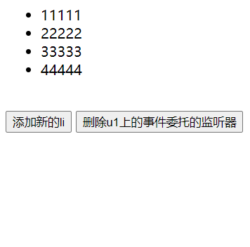
动画
动画
描述
基本
show()显示隐藏的匹配元素
hide()隐藏显示的元素
toggle()用于绑定两个或多个事件处理器函数，以响应被选元素的轮流的 click 事件
滑动
slideDown()通过高度变化（向下增大）来动态地显示所有匹配的元素，在显示完成后可选地触发一个回调函数
slideUp()通过高度变化（向上减小）来动态地隐藏所有匹配的元素，在隐藏完成后可选地触发一个回调函数
slideToggle()通过高度变化来切换所有匹配元素的可见性，并在切换完成后可选地触发一个回调函数
淡入淡出
fadeIn()通过不透明度的变化来实现所有匹配元素的淡入效果，并在动画完成后可选地触发一个回调函数
fadeOut()通过不透明度的变化来实现所有匹配元素的淡出效果，并在动画完成后可选地触发一个回调函数
fadeTo()把所有匹配元素的不透明度以渐进方式调整到指定的不透明度，并在动画完成后可选地触发一个回调函数
fadeToggle()通过不透明度的变化来开关所有匹配元素的淡入和淡出效果，并在动画完成后可选地触发一个回调函数
自定义
animate()用于创建自定义动画的函数
stop()停止所有在指定元素上正在运行的动画
finish()停止当前正在运行的动画，删除所有排队的动画，并完成匹配元素所有的动画
delay()设置一个延时来推迟执行队列中之后的项目
fadeIn、fadeOut、fadeToggle
淡入淡出：不断改变元素的透明度（opacity）来实现的
fadeIn()：带动画的显示fadeOut()：带动画隐藏fadeToggle()：带动画的切换显示/隐藏
1 2 3 4 5 6 7 8 9 10 11 12 13 14 15 16 17 18 19 20 21 22 23 24 25 var $div1 = $('.div1' );$('#btn1' ).click (function ( $div1.fadeOut (1000 ); }); $('#btn2' ).click (function ( $div1.fadeIn ('slow' ); }); $('#btn3' ).click (function ( $div1.fadeToggle ('slow' , 'linear' , function ( alert ('动画结束' ); }); });
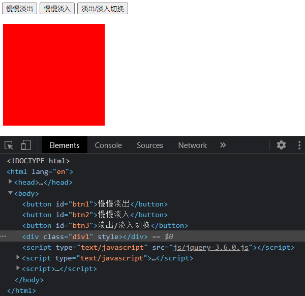
slideUp、slideDown、slideToggle
滑动动画：不断改变元素的高度（height）实现
slideDown()：带动画的展开slideUp()：带动画的收缩slideToggle()：带动画的切换展开/收缩
1 2 3 4 5 6 7 8 9 10 11 12 13 14 15 var $div1 = $('.div1' );$('#btn1' ).click (function ( $div1.slideUp (1000 ); }); $('#btn2' ).click (function ( $div1.slideDown ('slow' ); }); $('#btn3' ).click (function ( $div1.slideToggle ('slow' , 'linear' , function ( alert ('动画结束' ); }); });
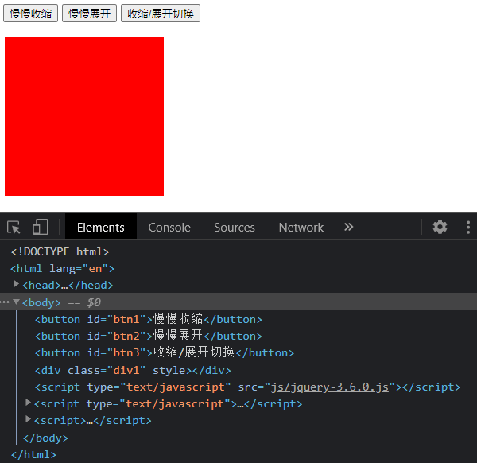
show、hide、toggle
显示隐藏，默认没有动画，动画（opacity/height/width）
show()：（不）带动画的显示hide()：（不）带动画的隐藏toggle()：（不）带动画的切换显示/隐藏
1 2 3 4 5 6 7 8 9 10 11 12 13 14 15 16 17 var $div1 = $('.div1' );$('#btn1' ).click (function ( $div1.show (); }); $('#btn2' ).click (function ( $div1.show ('slow' ); }); $('#btn3' ).click (function ( $div1.hide ('slow' ); }); $('#btn4' ).click (function ( $div1.toggle (); });
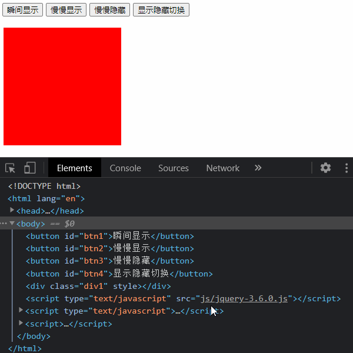
练习：切图
1 2 3 4 5 6 7 8 9 10 11 12 13 14 15 16 17 18 19 20 <div id ="container" > <div id ="list" > <img src ="img/5.jpg" alt ="5" /> <img src ="img/1.jpg" alt ="1" /> <img src ="img/2.jpg" alt ="2" /> <img src ="img/3.jpg" alt ="3" /> <img src ="img/4.jpg" alt ="4" /> <img src ="img/5.jpg" alt ="5" /> <img src ="img/1.jpg" alt ="1" /> </div > <div id ="pointsDiv" > <span index ="1" class ="on" > </span > <span index ="2" > </span > <span index ="3" > </span > <span index ="4" > </span > <span index ="5" > </span > </div > <a href ="javascript:;" id ="prev" class ="arrow" > <</a > <a href ="javascript:;" id ="next" class ="arrow" > ></a > </div >
1 2 3 4 5 6 7 8 9 10 11 12 13 14 15 16 17 18 19 20 21 22 23 24 25 26 27 28 29 30 31 32 33 34 35 36 37 38 39 40 41 42 43 44 45 46 47 48 49 50 51 52 53 54 55 56 57 58 59 60 61 62 63 64 65 66 67 68 69 70 71 72 73 74 75 76 77 78 79 80 81 82 83 84 85 86 87 88 89 90 91 92 93 94 95 96 97 98 99 100 101 102 103 104 105 106 107 108 109 110 111 112 113 114 115 116 117 118 119 120 121 122 123 124 125 126 127 128 129 130 131 132 133 134 135 136 function moveAnimation (element, styleName, targetValue, targetDuration, frameCount, callback ) { var $element = $(element); var initValue = parseFloat ($element.css (styleName)); var incrementValue = parseFloat (targetValue) - parseFloat (initValue); var frameValue = parseFloat (incrementValue) / parseFloat (frameCount); var frameTime = parseFloat (targetDuration) / parseFloat (frameCount); clearInterval ($element.frameTimer ); $element.frameTimer = setInterval (function ( var processValue = parseFloat ($element.css (styleName)) + frameValue; $element.css (styleName, processValue); if ((frameValue > 0 && processValue >= targetValue) || (frameValue < 0 && processValue <= targetValue)) { clearInterval ($element.frameTimer ); $element.css (styleName, targetValue); callback && callback (); } }, frameTime); } function leftAnimation (element, targetValue, callback ) { moveAnimation (element, 'left' , targetValue, 200 , 20 , callback); } var $container = $('#container' );var $list = $('#list' );var $pointsDiv = $('#pointsDiv > span' );var $prev = $('#prev' );var $next = $('#next' );var lastIndex = 1 ;function switchPic (targetIndex ) { targetIndex = parseInt (targetIndex); if (targetIndex < 0 || targetIndex > 6 ) { return ; } leftAnimation ($list, getTargetPosition (targetIndex), function ( if (targetIndex <= 0 ) { targetIndex = 5 ; $list.css ('left' , getTargetPosition (targetIndex)); } if (targetIndex >= 6 ) { targetIndex = 1 ; $list.css ('left' , getTargetPosition (targetIndex)); } $pointsDiv.filter ('[index=' + lastIndex + ']' ).removeClass ('on' ); $pointsDiv.filter ('[index=' + targetIndex + ']' ).addClass ('on' ); lastIndex = targetIndex; }); function getTargetPosition (targetIndex ) { var picWidth = $container.css ('width' ); return -targetIndex * parseFloat (picWidth); } } autoPic ();var timer;function autoPic ( clearInterval (timer); timer = setInterval (function ( switchPic (lastIndex + 1 ); }, 3000 ); } $container.hover (function ( clearInterval (timer); }, function ( autoPic (); }); $pointsDiv.on ('click' , function ( clearInterval (timer); switchPic (this .getAttribute ('index' )); }); $prev.on ('click' , function ( clearInterval (timer); switchPic (lastIndex - 1 ); }); $next.on ('click' , function ( clearInterval (timer); switchPic (lastIndex + 1 ); });
效果
练习：导航栏动态显示效果
1 2 3 4 5 6 7 8 9 10 11 12 13 14 15 16 17 18 19 20 21 22 23 24 25 26 27 28 29 30 <div id="navigation" > <ul > <li > <a href ="#" > 首页</a > </li > <li > <a href =“# "> 衬衫</a > <ul > <li > <a href ="#" > 短袖衬衫</a > </li > <li > <a href ="#" > 长袖衬衫</a > </li > <li > <a href ="#" > 无袖衬衫</a > </li > </ul > </li > <li > <a href ="#" > 卫衣</a > <ul > <li > <a href ="#" > 开襟卫衣</a > </li > <li > <a href ="#" > 套头卫衣</a > </li > </ul > </li > <li > <a href ="#" > 裤子</a > <ul > <li > <a href ="#" > 休闲裤</a > </li > <li > <a href ="#" > 卡其裤</a > </li > <li > <a href ="#" > 牛仔裤</a > </li > <li > <a href ="#" > 短裤</a > </li > </ul > </li > <li > <a href ="#" > 联系我们</a > </li > </ul > </div>
1 2 3 4 5 6 var $navigation = $('#navigation >ul>li:has(ul)' );$navigation.hover (function ( $(this ).children ('ul' ).stop ().slideDown (); }, function ( $(this ).children ('ul' ).stop ().slideUp (); });
效果
多库共存
问题：如果有 2 个库都有 $，就存在冲突
解决：jQuery 库可以释放 $ 的使用权，让另一个库可以正常使用，此时 jQuery 库只能使用 jQuery 了
API：jQuery.noconflict()
1 2 3 4 5 6 7 8 9 jQuery.noConflict (); $(); jQuery (function ( console .log ('文档加载完成' ); }); console .log ('+++++' );
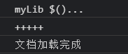
onload 与 ready
区别：window.onload 与 $(document).ready()
window.onload
包括页面的图片加载完后才会回调（晚）
只能有 一个监听回调
$(document).ready()
等同于：$(function(){})
页面加载完就回调（早）
可以有 多个监听回调
1 2 3 4 5 6 7 8 9 10 11 12 13 14 15 16 17 console .log ('直接' , $('#logo' ).width ()); $(function ( console .log ('ready' , $('#logo' ).width ()); }); window .onload = function ( console .log ('onload' , $('#logo' ).width ()); }; $('#logo' ).on ('load' , function ( console .log ('img load' , $('#logo' ).width ()); });